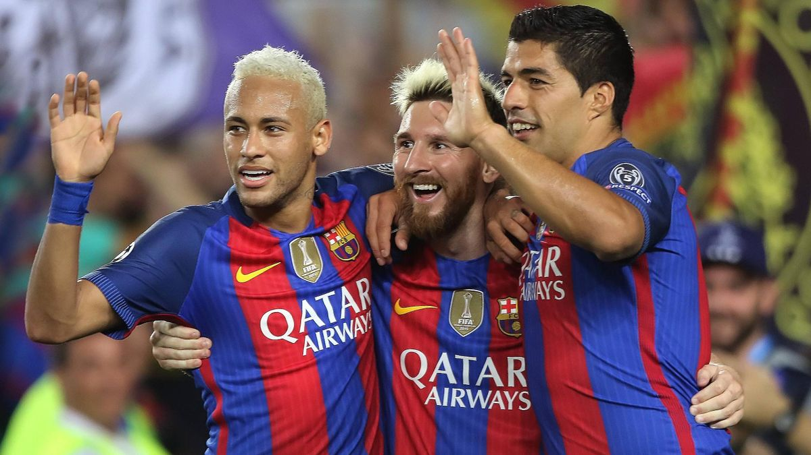

In meiner Freizeit spiele ich gerne Fussball. Ich habe mit sechs Jahren bei FC Wyler
Bern angefangen zu spielen. Mich fasziniert das Dribbeln mit dem Ball sehr denn die
Profis sind so schnell und die tricks sehen auch sehr cool aus.
Ich mag allgemein Team Sportarten, auch wenn manchmal die Kameraden nicht gerade sehr gut spielen können.
Meine Lieblingsmannschaft ist Paris-Saint-German in der Saison 21/22. In dieser Season hat sich PSG Messi und Ramos geholt das sind die Top Spieler auf der ganzen Welt.
Am liebsten spiele ich Fussball in der Nähe eines Wasser Parks, denn wenn man heiss hat, kann man direkt ins kalte erfrischende Wasser reinspringen.
Ich finde Fussball auch sehr schön, weil man im Fernseher auch spannende Matchs sich anschauen kann. Es ist auch immer spannend zu sehen, wie gut die jungen Spieler Fussball spielen. Ich spiele Fussball, weil es mir natürlich Spass macht, aber auch weil ich während diesen Zeiten alles vergessen kann und mich nur auf Fussball konzentrieren kann. FUSSBALL IST DIE BESTE SPORTART
